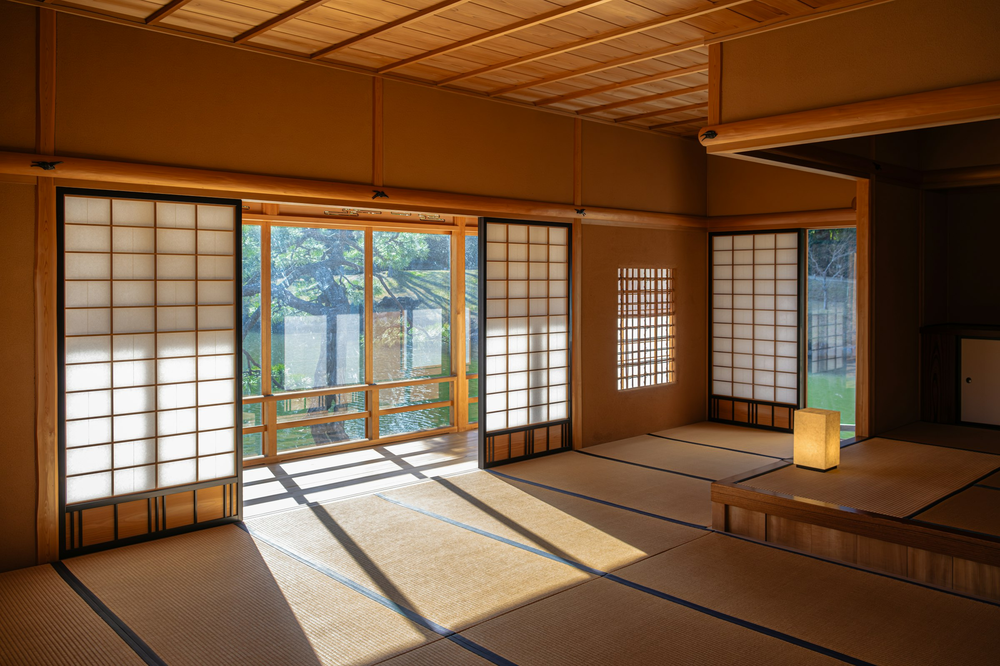
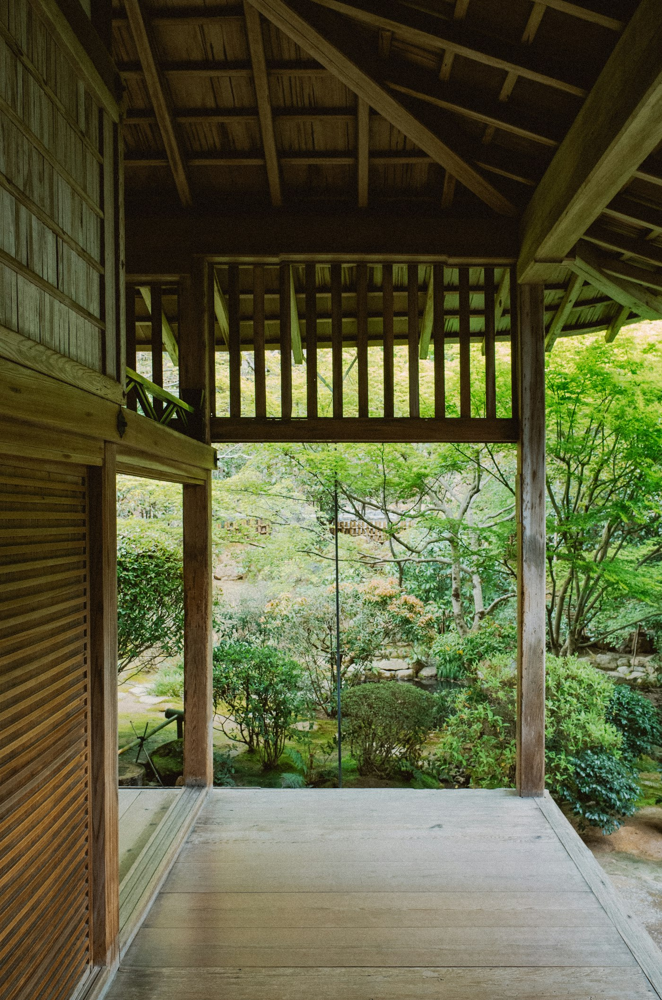
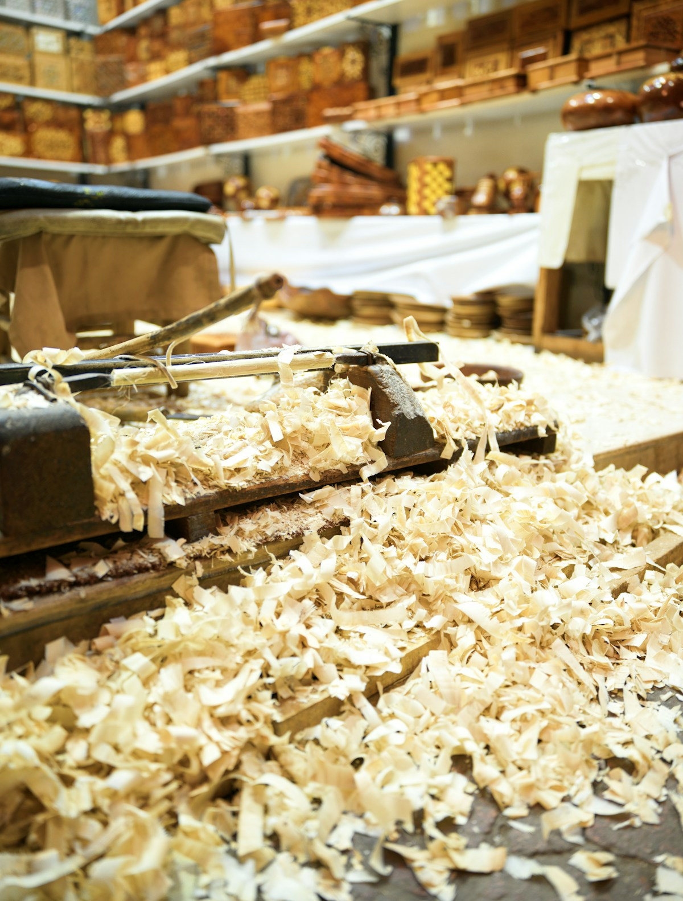
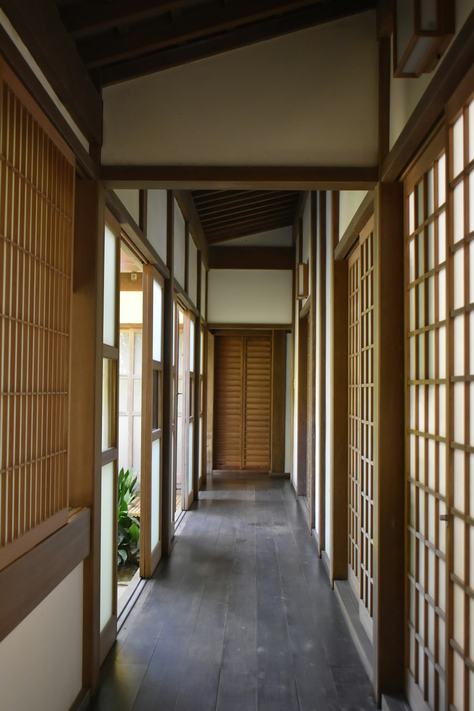
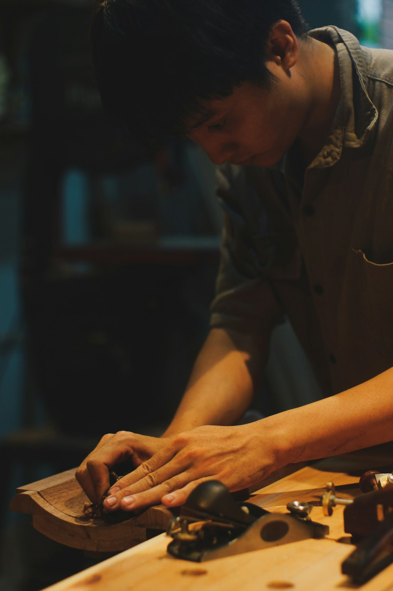
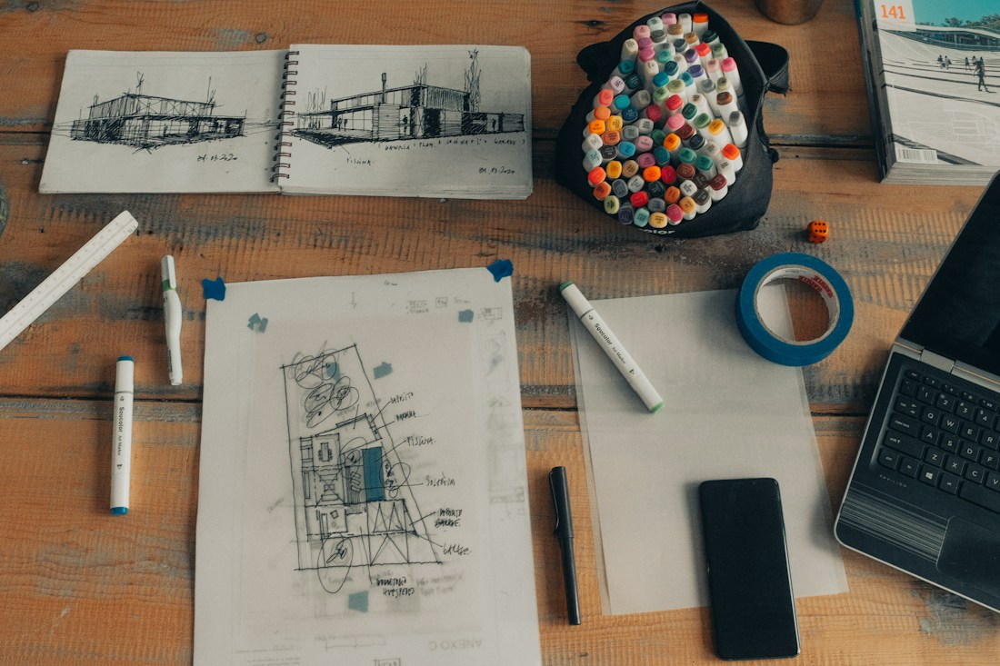

OUR HOMEBUILDING
私たちの家づくり
木のぬくもりと、やわらかな光。
家族の時間を大切にしながら、永く安心して暮らせる住まいを、ひとつひとつ丁寧につくっています。

PHILOSOPHY
私たちの想い
木和工務店は1985年の創業以来、この土地の気候や風土に寄り添いながら、木の家づくりを続けてきました。
朝の光が差し込むダイニング、風が抜ける縁側、家族の気配を感じる階段。住まいの心地よさは、間取りや性能だけでなく、毎日の何気ない時間の中にあると考えています。
だからこそ、まずはじっくりとお話を聞くことから。ご家族の暮らしに耳を傾け、永く愛着を持って住み継げる家を、一緒につくっていきます。
木和工務店 代表○○ ○○

-
聞く
暮らしの話から始める
間取りより先に、ご家族の日々の過ごし方や、大切にしたいことを伺います。
-
活かす
土地と素材を活かす
敷地の光や風、木の個性を読み取り、その場所らしい住まいを考えます。
-
寄り添う
建てた後も見守る
お引き渡しは、はじまり。住まいとともに、永いお付き合いを続けます。
OUR CRAFT
家づくりのこだわり
永く、心地よく暮らすために。
素材と設計、そして手仕事を大切にしています。
-

素材を選ぶ
床や柱、建具に使う木は、産地や乾燥の具合まで確かめて選んでいます。無垢材や塗り壁、和紙など、触れて心地よく、時とともに味わいが深まる自然素材を。経年の変化も住まいの表情として楽しめるよう、ご提案します。
-
国産材を中心とした無垢の木
素足で触れる木のやさしい質感が、毎日の暮らしにぬくもりを添えます。
-
漆喰・珪藻土などの塗り壁
光をやわらかく受け止める塗り壁の表情が、落ち着いてくつろげる空間をつくります。
-
経年変化を楽しめる仕上げ
日々の小さな傷や色の変化も住まいの表情となり、使うほどに愛着が深まります。
-
-

光と風を生かす
季節ごとの日の高さや風向きを読み、窓の位置や大きさ、軒の深さを決めていきます。夏は涼やかに、冬はやわらかな陽だまりを。設備に頼りすぎず、自然とつながりながら心地よく過ごせる設計を大切にしています。
-
敷地ごとの日当たり・通風の確認
土地の特徴に合わせて部屋や窓を配置し、明るさと風の通りを暮らしに取り込みます。
-
深い軒と庇で季節の光を調整
夏の強い日差しを遮り、冬の陽の光を招くことで、季節に寄り添う心地よさを目指します。
-
風が通り抜ける窓の配置
空気の入口と出口を考えることで、室内に風を通し、気持ちよく過ごせる居場所をつくります。
-
-

丁寧につくる
経験を重ねた職人が、刻みや納まり、仕上げの一つひとつに手をかけます。見えなくなる構造や下地こそ丁寧に。つくる過程も共有しながら、安心して永く暮らせる住まいをお届けします。
-
自社の大工による一貫した施工
打ち合わせで伺った想いを現場までつなぎ、細かな使い勝手にも目を配ります。
-
工程ごとの丁寧な現場確認
工事の節目に仕上がりを確かめることで、見えない部分も含めて安心して暮らせる住まいを目指します。
-
現場はいつでもご見学いただけます
住まいができていく様子をご自身の目で確かめ、気になることもその場で相談できます。
-
FLOW
家づくりの流れ
はじめてのご相談から、お引き渡しのその先まで。
一つひとつの段階を、ご家族と一緒に進めていきます。

出会う
目安：約1か月
-
STEP 01
お問い合わせ・ご相談
「こんな暮らしがしたい」という想いや、気になっていることをお気軽にお聞かせください。見学会や相談会からのご参加も歓迎しています。
-
STEP 02
ヒアリング・現地調査
ご家族の暮らし方やこれからのこと、ご予算について伺います。あわせて敷地を訪れ、日当たりや風の通り、周辺の環境を確かめます。
かたちにする
目安：約3〜5か月
-
STEP 03
プランのご提案・お見積り
伺った想いと敷地の条件をもとに、間取りと概算のお見積りをご提案します。納得いただけるまで、何度でも話し合いを重ねます。
-
STEP 04
ご契約・詳細設計
木の種類や仕上げ、設備、照明、造作家具など、細部まで一緒に決めていきます。サンプルに触れながら、暮らしの姿を具体的に描きます。
つくる・暮らす
目安：約4〜6か月（お引き渡し後も、ずっと）
-
STEP 05
着工・施工
地鎮祭を経て、いよいよ工事のはじまりです。進み具合は定期的にご報告し、現場にもお気軽にお越しいただけます。
-
STEP 06
完成・お引き渡し
完成検査ののち、住まいの使い方や木のお手入れ方法をご説明して、お引き渡しします。
-
STEP 07
アフターメンテナンス
定期点検はもちろん、暮らしの中での小さな困りごとにも寄り添います。住まいの手入れや将来の住み替え・改修のご相談もお任せください。
※期間は一般的な新築住宅の目安です。敷地の条件や計画の内容により異なります。
OPEN HOUSE & CONSULTATION
まずは、実際の住まいを見てみませんか。
完成見学会や家づくり相談会を開催しています。
木の手ざわりや光の入り方を、ぜひ体感してください。